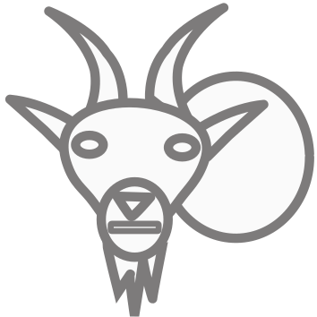
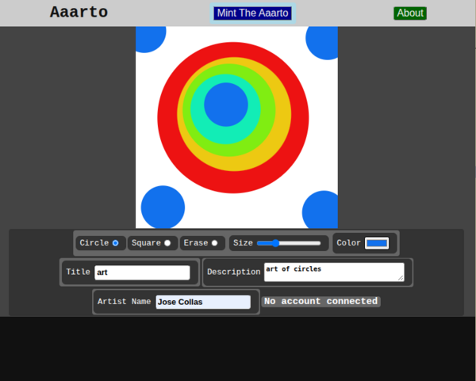
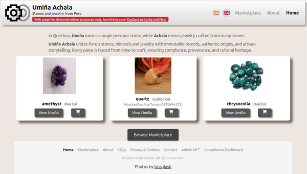
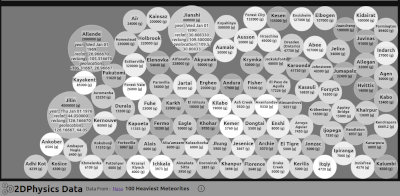
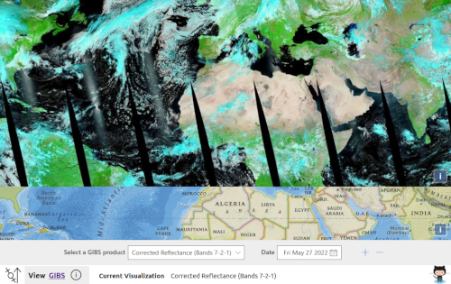

Work
A selection of projects, mostly built with JavaScript, TypeScript, React and D3. The featured projects are live and worth a look. The rest are open source repositories on GitHub.

A selection of projects, mostly built with JavaScript, TypeScript, React and D3. The featured projects are live and worth a look. The rest are open source repositories on GitHub.
Aaarto is an online drawing program that mints the artwork as an NFT. Art is built from circles and squares and saved as SVG, so the minted work keeps its structure. The SVG and its metadata are stored on IPFS, and minting goes through a user's wallet. Aaarto runs on the Polygon network, and minted art can be viewed on Rarible.
Visit aaarto.art · Source on GitHub

A marketplace concept for stones and jewelry from Peru, built around provenance: each piece is traced from mine to craft with immutable records. The site is currently a demonstration, with a public launch planned.
Visit umina-achala.pe · Source on GitHub

2DPhysics Data is an exploration of visualizing data with a 2D physics layout. The data displayed is 100 of the Heaviest Meteorites from NASA's Open Data Portal.
Launch 2DPhysics Data · Source on GitHub

View GIBS is a tool for viewing satellite images provided by NASA's Global Imagery Browse Services (GIBS) system.

Techniques for using React, TypeScript and D3.js together.
D3 Geo rendering a globe image, with React controls.
Scripts to work with GPS data.
A pattern for displaying data with RxJS and React.
A to-do list application written with React and ReactiveX.
An example of using hooks in React.
Methods for using the D3 visualization library inside a framework.
Real world asset tokenization in remote locations.
A simple drawing program in SVG.
A Python script for converting images into SVG files for laser cutting.
A system of applications that controls LEDs on remote devices, with a Node agent sending MQTT topics on behalf of a user.
Get, fuse and display sensor information for Android.
A game where the user navigates a creature, Ameb, to catch food.
SVG animation samples.